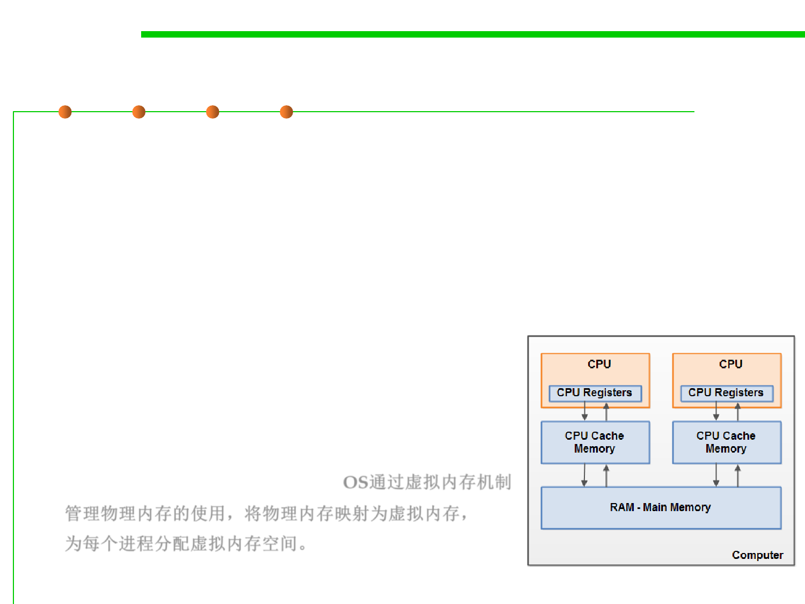

8.1 Metrics, Principles, and Methods of Construction for Performance
Recall: Memory handling in OS
▪ Native memory is the memory which is available to a process, e.g.
the Java process.
▪ Native memory is controlled by OS and based on physical memory
and other physical devices, e.g. disks, flash memory, etc.
– CPU computes the instructions to execute and stores its computation
results into registers. It can access the normal memory over the memory
bus.
– OS normally uses virtual memory to map the
physical memory to memory which each
process can see. It assigns memory to each
process in a virtual memory space for this
process and maps access to this virtual memory
to the real physical memory. OS通过虚拟内存机制
管理物理内存的使用，将物理内存映射为虚拟内存，
为每个进程分配虚拟内存空间。